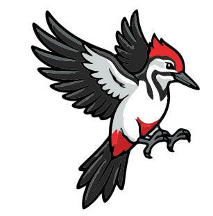

Woodpecker: How
First, we watch the task happen and agree on what should change and what must stay the same. Next, we sketch the smallest safe approach and build a test version using sample information rather than private account data.
Finally, we try the tool with its owner, explain how to run it and undo its effects, and leave a short set of instructions. If it cannot be tested clearly in the session, we pause and describe the next step instead of calling unfinished work a success.
- Observe and define one task.
- Build and test a small solution.
- Explain, hand off, and document it.
